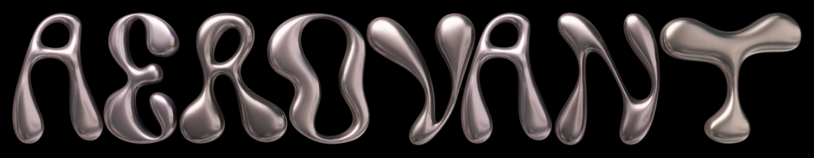

AV-1 Founders' Flight
Have you ever been to space?
Well now you can! Donate to support AV-1's development and have your name sent into orbit around our planet!
Send your name to space
Have you ever been to space?
Well now you can! Donate to support AV-1's development and have your name sent into orbit around our planet!
Send your name to space